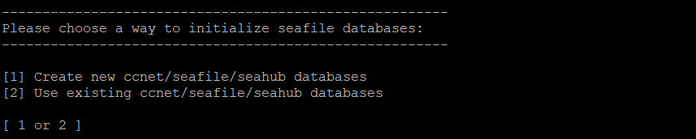

Installation of Seafile Server Community Edition with MySQL/MariaDB¶
This manual explains how to deploy and run Seafile Server Community Edition (Seafile CE) on a Linux server from a pre-built package using MySQL/MariaDB as database. The deployment has been tested for Debian/Ubuntu and CentOS, but Seafile should also work on other Linux distributions.
Tip: If you have little experience with Seafile Server, we recommend that you use an installation script for deploying Seafile.
Requirements¶
Seafile CE for x86 architecture requires a minimum of 2 cores and 2GB RAM.
There is a community-supported package for the installation on Raspberry Pi.
Setup¶
Installing and preparing the SQL database¶
Seafile supports MySQL and MariaDB. We recommend that you use the preferred SQL database management engine included in the package repositories of your distribution. This means:
- CentOS and Debian: MariaDB
- Ubuntu: MySQL
You can find step-by-step how-tos for installing MySQL and MariaDB in the tutorials on the Digital Ocean website.
Seafile uses the mysql_native_password plugin for authentication. The versions of MySQL and MariaDB installed on CentOS 8, Debian 10, and Ubuntu 20.04 use a different authentication plugin by default. It is therefore required to change to authentication plugin to mysql_native_password for the root user prior to the installation of Seafile. The above mentioned tutorials explain how to do it.
Installing prerequisites¶
For Seafile 8.0.x
# Debian 10
sudo apt-get update
sudo apt-get install python3 python3-setuptools python3-pip default-libmysqlclient-dev -y
sudo pip3 install --timeout=3600 Pillow==9.4.0 pylibmc captcha jinja2 sqlalchemy==1.4.3 \
django-pylibmc django-simple-captcha python3-ldap mysqlclient
# Ubuntu 18.04
sudo apt-get update
sudo apt-get install python3 python3-setuptools python3-pip -y
sudo pip3 install --timeout=3600 Pillow==9.4.0 pylibmc captcha jinja2 sqlalchemy==1.4.3 \
django-pylibmc django-simple-captcha python3-ldap
# Ubuntu 20.04
sudo apt-get update
sudo apt-get install python3 python3-setuptools python3-pip libmysqlclient-dev memcached libmemcached-dev -y
sudo pip3 install --timeout=3600 Pillow==9.4.0 pylibmc captcha jinja2 sqlalchemy==1.4.3 \
django-pylibmc django-simple-captcha python3-ldap mysqlclient
# CentOS 8
sudo yum install python3 python3-setuptools python3-pip python3-devel mysql-devel gcc -y
sudo pip3 install --timeout=3600 Pillow==9.4.0 pylibmc captcha jinja2 sqlalchemy==1.4.3 \
django-pylibmc django-simple-captcha python3-ldap mysqlclient
For Seafile 9.0.x
Note: CentOS 8 is no longer supported.
# Ubuntu 20.04 (almost the same for Ubuntu 18.04 and Debian 10)
sudo apt-get update
sudo apt-get install -y python3 python3-setuptools python3-pip libmysqlclient-dev
sudo apt-get install -y memcached libmemcached-dev
sudo pip3 install --timeout=3600 django==3.2.* Pillow==9.4.0 pylibmc captcha jinja2 sqlalchemy==1.4.3 \
django-pylibmc django-simple-captcha python3-ldap mysqlclient pycryptodome==3.12.0 cffi==1.14.0 lxml
For Seafile 10.0.x
# Ubuntu 22.04 (almost the same for Ubuntu 20.04 and Debian 11, Debian 10)
sudo apt-get update
sudo apt-get install -y python3 python3-setuptools python3-pip libmysqlclient-dev
sudo apt-get install -y memcached libmemcached-dev
sudo pip3 install --timeout=3600 django==3.2.* future==0.18.* mysqlclient==2.1.* \
pymysql pillow==10.2.* pylibmc captcha==0.5.* markupsafe==2.0.1 jinja2 sqlalchemy==1.4.44 \
psd-tools django-pylibmc django_simple_captcha==0.5.20 djangosaml2==1.5.* pysaml2==7.2.* pycryptodome==3.16.* cffi==1.15.1 lxml
For Seafile 11.0.x (Debian 11, Ubuntu 22.04, etc.)
# Ubuntu 22.04 (almost the same for Ubuntu 20.04 and Debian 11, Debian 10)
sudo apt-get update
sudo apt-get install -y python3 python3-dev python3-setuptools python3-pip libmysqlclient-dev ldap-utils libldap2-dev
sudo apt-get install -y memcached libmemcached-dev
sudo pip3 install --timeout=3600 django==4.2.* future==0.18.* mysqlclient==2.1.* \
pymysql pillow==10.2.* pylibmc captcha==0.5.* markupsafe==2.0.1 jinja2 sqlalchemy==2.0.18 \
psd-tools django-pylibmc django_simple_captcha==0.6.* djangosaml2==1.5.* pysaml2==7.2.* pycryptodome==3.16.* cffi==1.15.1 lxml python-ldap==3.4.3
For Seafile 11.0.x on Debian 12 and Ubuntu 24.04 with virtual env
Debian 12 and Ubuntu 24.04 are now discouraging system-wide installation of python modules with pip. It is preferred now to install modules into a virtual environment which keeps them separate from the files installed by the system package manager, and enables different versions to be installed for different applications. With these python virtual environments (venv for short) to work, you have to activate the venv to make the packages installed in it available to the programs you run. That is done here with "source python-venv/bin/activate".
# Debian 12
sudo apt-get update
sudo apt-get install -y python3 python3-dev python3-setuptools python3-pip libmariadb-dev-compat ldap-utils libldap2-dev libsasl2-dev python3.11-venv
sudo apt-get install -y memcached libmemcached-dev
mkdir /opt/seafile
cd /opt/seafile
# create the vitual environment in the python-venv directory
python3 -m venv python-venv
# activate the venv
source python-venv/bin/activate
# Notice that this will usually change your prompt so you know the venv is active
# install packages into the active venv with pip (sudo isn't needed because this is installing in the venv, not system-wide).
pip3 install --timeout=3600 django==4.2.* future==0.18.* mysqlclient==2.1.* pymysql pillow==10.0.* pylibmc captcha==0.4 markupsafe==2.0.1 jinja2 sqlalchemy==2.0.18 psd-tools django-pylibmc django_simple_captcha==0.5.* djangosaml2==1.5.* pysaml2==7.2.* pycryptodome==3.16.* cffi==1.15.1 lxml python-ldap==3.4.3
# Ubuntu 24.04
sudo apt-get update
sudo apt-get install -y python3 python3-dev python3-setuptools python3-pip libmysqlclient-dev ldap-utils libldap2-dev python3.12-venv
sudo apt-get install -y memcached libmemcached-dev
mkdir /opt/seafile
cd /opt/seafile
# create the vitual environment in the python-venv directory
python3 -m venv python-venv
# activate the venv
source python-venv/bin/activate
# Notice that this will usually change your prompt so you know the venv is active
# install packages into the active venv with pip (sudo isn't needed because this is installing in the venv, not system-wide).
pip3 install --timeout=3600 django==4.2.* future==0.18.* mysqlclient==2.1.* \
pymysql pillow==10.2.* pylibmc captcha==0.5.* markupsafe==2.0.1 jinja2 sqlalchemy==2.0.18 \
psd-tools django-pylibmc django_simple_captcha==0.6.* djangosaml2==1.5.* pysaml2==7.2.* pycryptodome==3.16.* cffi==1.16.0 lxml python-ldap==3.4.3
Creating the program directory¶
The standard directory for Seafile's program files is /opt/seafile. Create this directory and change into it:
sudo mkdir /opt/seafile
cd /opt/seafile
The program directory can be changed. The standard directory /opt/seafile is assumed for the rest of this manual. If you decide to put Seafile in another directory, modify the commands accordingly.
Creating user seafile¶
It is good practice not to run applications as root.
Create a new user and follow the instructions on the screen:
sudo adduser seafile
Change ownership of the created directory to the new user:
sudo chown -R seafile: /opt/seafile
All the following steps are done as user seafile.
Change to user seafile:
su seafile
Downloading the install package¶
Download the install package from the download page on Seafile's website using wget.
We use Seafile CE version 8.0.4 as an example in the rest of this manual.
Uncompressing the package¶
The install package is downloaded as a compressed tarball which needs to be uncompressed.
Uncompress the package using tar:
tar xf seafile-server_8.0.4_x86-64.tar.gz
Now you have:
$ tree -L 2
.
├── seafile-server-8.0.4
│ ├── check_init_admin.py
│ ├── reset-admin.sh
│ ├── runtime
│ ├── seaf-fsck.sh
│ ├── seaf-fuse.sh
│ ├── seaf-gc.sh
│ ├── seafile
│ ├── seafile.sh
│ ├── seahub
│ ├── seahub.sh
│ ├── setup-seafile-mysql.py
│ ├── setup-seafile-mysql.sh
│ ├── setup-seafile.sh
│ ├── sql
│ └── upgrade
└── seafile-server_8.0.4_x86-64.tar.gz
Setting up Seafile CE¶
The install package comes with a script that sets Seafile up for you. Specifically, the script creates the required directories and extracts all files in the right place. It can also create a MySQL user and the three databases that Seafile's components require :
- ccnet server
- seafile server
- seahub
Note: While ccnet server was merged into the seafile-server in Seafile 8.0, the corresponding database is still required for the time being.
Run the script as user seafile:
# For installations using python virtual environment, activate it if it isn't already active
source python-venv/bin/activate
cd seafile-server-8.0.4
./setup-seafile-mysql.sh
Configure your Seafile Server by specifying the following three parameters:
| Option | Description | Note |
|---|---|---|
| server name | Name of the Seafile Server | 3-15 characters, only English letters, digits and underscore ('_') are allowed |
| server's ip or domain | IP address or domain name used by the Seafile Server | Seafile client program will access the server using this address |
| fileserver port | TCP port used by the Seafile fileserver | Default port is 8082, it is recommended to use this port and to only change it if is used by other service |
In the next step, choose whether to create new databases for Seafile or to use existing databases. The creation of new databases requires the root password for the SQL server.

When choosing "[1] Create new ccnet/seafile/seahub databases", the script creates these databases and a MySQL user that Seafile Server will use to access them. To this effect, you need to answer these questions:
| Question | Description | Note |
|---|---|---|
| mysql server host | Host address of the MySQL server | Default is localhost |
| mysql server port | TCP port used by the MySQL server | Default port is 3306; almost every MySQL server uses this port |
| mysql root password | Password of the MySQL root account | The root password is required to create new databases and a MySQL user |
| mysql user for Seafile | MySQL user created by the script, used by Seafile's components to access the databases | Default is seafile; the user is created unless it exists |
| mysql password for Seafile user | Password for the user above, written in Seafile's config files | Percent sign ('%') is not allowed |
| database name | Name of the database used by ccnet | Default is "ccnet_db", the database is created if it does not exist |
| seafile database name | Name of the database used by Seafile | Default is "seafile_db", the database is created if it does not exist |
| seahub database name | Name of the database used by seahub | Default is "seahub_db", the database is created if it does not exist |
When choosing "[2] Use existing ccnet/seafile/seahub databases", this are the prompts you need to answer:
| Question | Description | Note |
|---|---|---|
| mysql server host | Host address of the MySQL server | Default is localhost |
| mysql server port | TCP port used by MySQL server | Default port is 3306; almost every MySQL server uses this port |
| mysql user for Seafile | User used by Seafile's components to access the databases | The user must exists |
| mysql password for Seafile user | Password for the user above | |
| ccnet database name | Name of the database used by ccnet, default is "ccnet_db" | The database must exist |
| seafile database name | Name of the database used by Seafile, default is "seafile_db" | The database must exist |
| seahub dabase name | Name of the database used by Seahub, default is "seahub_db" | The database must exist |
If the setup is successful, you see the following output:

The directory layout then looks as follows:
$ tree /opt/seafile -L 2
seafile
├── ccnet
├── conf
│ └── ccnet.conf
│ └── gunicorn.conf.py
│ └── seafdav.conf
│ └── seafile.conf
│ └── seahub_settings.py
├── seafile-data
│ └── library-template
├── seafile-server-8.0.4
│ └── check_init_admin.py
│ ├── reset-admin.sh
│ ├── runtime
│ └── seaf-fsck.sh
│ └── seaf-gc.sh
│ ├── seafile
│ ├── seafile.sh
│ ├── seahub
│ ├── seahub.sh
│ └── setup-seafile-mysql.py
│ ├── setup-seafile-mysql.sh
│ └── sql
│ └── upgrade
├── seafile-server-latest -> seafile-server-8.0.6
├── seahub-data
│ └── avatars
The folder seafile-server-latest is a symbolic link to the current Seafile Server folder. When later you upgrade to a new version, the upgrade scripts update this link to point to the latest Seafile Server folder.
Note: If you don't have the root password, you need someone who has the privileges, e.g., the database admin, to create the three databases required by Seafile, as well as a MySQL user who can access the databases. For example, to create three databases ccnet_db / seafile_db / seahub_db for ccnet/seafile/seahub respectively, and a MySQL user "seafile" to access these databases run the following SQL queries:
create database `ccnet_db` character set = 'utf8';
create database `seafile_db` character set = 'utf8';
create database `seahub_db` character set = 'utf8';
create user 'seafile'@'localhost' identified by 'seafile';
GRANT ALL PRIVILEGES ON `ccnet_db`.* to `seafile`@localhost;
GRANT ALL PRIVILEGES ON `seafile_db`.* to `seafile`@localhost;
GRANT ALL PRIVILEGES ON `seahub_db`.* to `seafile`@localhost;
Setup Memory Cache¶
Seahub caches items(avatars, profiles, etc) on file system by default(/tmp/seahub_cache/). You can replace with Memcached or Redis.
Use Memcached¶
Use the following commands to install memcached and corresponding libraies on your system:
# on Debian/Ubuntu 18.04+
apt-get install memcached libmemcached-dev -y
pip3 install --timeout=3600 pylibmc django-pylibmc
systemctl enable --now memcached
Add the following configuration to seahub_settings.py.
CACHES = {
'default': {
'BACKEND': 'django_pylibmc.memcached.PyLibMCCache',
'LOCATION': '127.0.0.1:11211',
},
}
Use Redis¶
Redis is supported since version 11.0.
First, install Redis with package installers in your OS.
Then refer to Django's documentation about using Redis cache to add Redis configurations to seahub_settings.py.
Tweaking conf files¶
Seafile's config files as created by the setup script are prepared for Seafile running behind a reverse proxy.
To access Seafile's web interface and to create working sharing links without a reverse proxy, you need to modify two configuration files in /opt/seafile/conf:
- seahub_settings.py (if you use 9.0.x): Add port 8000 to the
SERVICE_URL(i.e., SERVICE_URL = 'http://1.2.3.4:8000/'). - ccnet.conf (if you use 8.0.x or 7.1.x): Add port 8000 to the
SERVICE_URL(i.e., SERVICE_URL = http://1.2.3.4:8000/). - gunicorn.conf.py: Change the bind to "0.0.0.0:8000" (i.e., bind = "0.0.0.0:8000")
Starting Seafile Server¶
Run the following commands in /opt/seafile/seafile-server-latest:
# For installations using python virtual environment, activate it if it isn't already active
source python-venv/bin/activate
./seafile.sh start # starts seaf-server
./seahub.sh start # starts seahub
The first time you start Seahub, the script prompts you to create an admin account for your Seafile Server. Enter the email address of the admin user followed by the password.
Now you can access Seafile via the web interface at the host address and port 8000 (e.g., http://1.2.3.4:8000)
Note: On CentOS, the firewall blocks traffic on port 8000 by default.
Troubleshooting¶
If seafile.sh and/or seahub.sh fail to run successfully, use pgrep to check if seafile/seahub processes are still running:
pgrep -f seafile-controller # checks seafile processes
pgrep -f "seahub" # checks seahub process
Use pkill to kill the processes:
pkill -f seafile-controller
pkill -f "seahub"
Stopping and Restarting Seafile and Seahub¶
Stopping¶
./seahub.sh stop # stops seahub
./seafile.sh stop # stops seaf-server
Restarting¶
# For installations using python virtual environment, activate it if it isn't already active
source python-venv/bin/activate
./seafile.sh restart
./seahub.sh restart
Enabling HTTPS¶
It is strongly recommended to switch from unencrypted HTTP (via port 8000) to encrypted HTTPS (via port 443).
This manual provides instructions for enabling HTTPS for the two most popular web servers and reverse proxies: